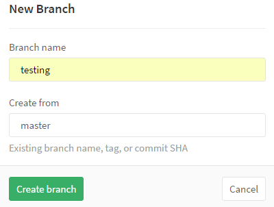
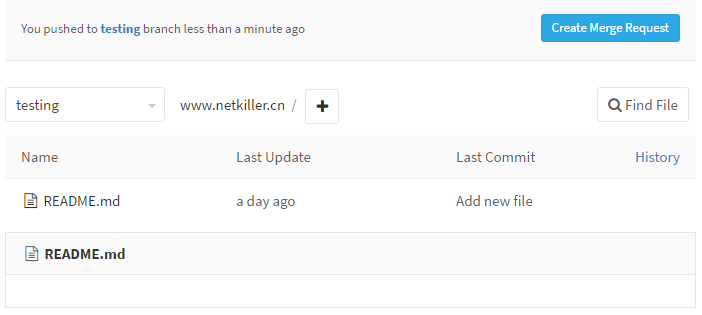

DEVOPS
Technical department with DevOps
版权声明
转载请与作者联系，转载时请务必标明文章原始出处和作者信息及本声明。
|
|
|
微信扫描二维码进入 Netkiller 微信订阅号 QQ群：128659835 请注明“读者” |


2016-06-01
1. 软件项目管理篇
这里讲述项目管理的基本知识与方法，软件项目管理与传统行业项目管理最大的区别可能是知识型人才的管理。所谓管理大可分为两类，一类是着重考察项目过程本身，一类是主要考察项目的参与者，前者着重于时间管理，后者倾向于绩效考核。
学习管理你千万不能陷入到管理学领域，很多管理者陷入一个误区，试图寻找一种管理工具(非软件，这里指的是管理方法)，通过工具解决项目管理问题。
管理软件开发团队，你只需要20%的管理学知识，更多的是对技术的掌握。
1.1. 范围管理
为了实现项目的目标，对项目的工作内容进行控制的管理过程。它包括范围的界定，范围的规划，范围的调整等。
我们将技术部划分为三个子部门，这是为了实现DEVOPS而制定。
-
软件开发部
-
软件测试部
-
运维部
1.2. 时间管理
为了确保项目最终的按时完成的一系列管理过程。它包括具体活动的界定，如：活动排序、时间估计、进度安排及时间控制等项工作。
时间管理站项目管理40%的内容，很多人对项目管理的理解就是时间管理，其次就是质量管理。
1.2.1. 项目管理中工时计算的问题
1.2.1.1. 背景
-
为什么项目总是不能按时结项？
-
为什么工期一再延误？
-
员工不够努力吗？
-
时间去了哪里？
1.2.1.2. 面临的问题
普遍问题是，我们至今对知识型工作者的做事效率，仍采用工业时代的评价模式。若工作者每小时的效率产出基本一致，那关注他们的工作时长便行之有理。 对于重复性劳动，这种评价模式可能确实管用，但对知识型工作者就不太适用。
1.2.1.3. 工时去了哪里？
据统计一个典型的美国办公室工作者，每个工作日只能完成90分钟真正有意义的工作。
当天剩余的大部分时间，都被浪费在各种分心事务上，比如阅读新闻、网上冲浪、同事社交、吃零食、喝咖啡、翻看报纸、处理无关邮件、不必要的拖延行为、玩游戏、做白日梦等。 多说一句，美国办公室工作者在世界范围内还算最高效的人群。在其他很多国家，人们每天完成的实质工作甚至更少。
1.2.1.3.1. 洗手间，茶水间，吸烟
-
洗手间，先不分男女性别差异以及大小号，平均下来10~15分钟一次没有意见吧？那么一天至少两次吧？
-
茶水间，洗杯子，泡茶，清理茶叶残渣，遇到同时还需要寒暄几句。需要10分钟吧？ 一天至少2~4次吧？
-
吸烟，我不吸烟不太清楚，但是看到公司的烟友抽的爽，了得欢。20 分钟要吧？
1.2.1.3.2. 看邮件，写邮件
我最讨厌邮件群发，或将不相关的邮件也CC给我。阅读这些不相关的邮件是非常浪费时间的，你不清楚那封邮件中会与你有关，只能逐一阅读。 写邮件更浪费时间，给领导写邮件浪费时间乘以二，既要要注意措辞，还要注意语气。 阅读邮件至少需要30分钟时间，写邮件需要1个小时
1.2.1.3.3. 沟通
很多企业组织架构层级导致沟通不顺畅，增加沟通成本，工时内耗。企业应该为员工提供开放的沟通，而不是层层转达。
1.2.1.3.4. 查资料
查资料并没有浪费工时，磨刀不误砍柴工。但资料查了，问题没有解决工时就被消耗了。
1.2.1.3.5. 无关的会议
中国是开会就是你一句我一句出主意，大都无法落实。很多无关会议把你拉去旁听。一般会议时间都在2个小时左右。
1.2.1.3.6. 不必要的拖延行为
员工拖延时间有很多原因，不一定都是员工的问题，多是企业的问题造成的，所以企业自身要找原因，不要归罪为员工问题。
1.2.1.3.7. 私人时间
-
看手机短信，接听乱七八糟的电话（买保险的，贷款的，卖房的，头自理财的，诈骗的）
-
微信，朋友圈
-
看新闻，玩游戏
以上仅仅粗略列出几项影响工时的因素，但实际过程中远不止这些，会有更多因素会占用工时。
1.2.1.4. 怎样改善面临的问题
死扣工时的时代已经过去了，我们应该更多关注员工产出成果。
欧美企业尽可能的为员工提供最好的工作，弹性工作时间甚至可以SOHO办公，不是让员工享受，而是让员工最大化产出。
目标管理，价值管理都胜过时间管理。
我认为项目管理应该改叫项目服务，项目服务能更描述项目人员的角色。
员工每天真正投入工作的时间越长，产出就越多，做有真正有意义的工作才是王道。
1.2.1.5. 怎样计算项目工时？
项目管理中通常是采用8小时/每天，一周40小时来计算工时。
项目延期主要问题就是工时计算不合理，项目工时不能与8小时工作制挂钩。
8小时工作制，仅仅是规定员工在8小时之内要工作岗位上。
员工不是机器人，不可能8小时内，一刻不停的工作。
所以减去上洗手间，茶水间，吸烟，处理工作邮件，回复工作即时消息，开无用的会议等等时间，员工剩下多少真正有意义的工作时间？
所以我认为保守计算，项目工时应该按6小时计算甚至4小时。
1.2.2. 任务分配
怎样管理好项目
怎样轻松地管理好项目，其实非常简单，做好下面几点即可。
- 规划目录
- 配置管理
-
你要关注那些事情要做，安排好先后顺序，每个版本中完成那些任务，完成多少任务达到一个里程碑，该在何时测试，何时部署。你每天要关注的是版本库的变化，代码的修改与审查，控制好分支等等。下面我会逐条详述。
首先立项后，你首先要规划好项目的目录结构与版本库布局，然后是配置项，包括开发，测试，生产三套，分别用户各种场景。同时需要配置三个项目环境。
接下来是分解任务，确认在那个版本发布那些完成的任务，规划里程碑。这些工作是增量，逐渐增加了，但确认第一个版本是必须的。
中国式开发，过于随意很难按照西方 ALPHA-1,2,3... -> BETA-1,2,3... -> RC1,2,3.... ->
Release 1,2,3...
这样的进度进行，每个环节都需要半个月之久，发布一个版本通常需要一年。中国更多的是上面拍板随时发布。所以我喜欢采用功能点对应版本的方式，即某某功能就是一个小版本，完成一个功能升级一个版本，里程碑就是一个大的Release
版本。这样可以满足中国式发布。每个版本一个分支，每个Release一个tag。
关注Timeline，代码每处修改都要仔细读一遍，很多bug都可以在review（代码审查）过程中过滤掉一部分，同时防止不符责任的提交（代码不能运行）
严格管控分支，把握项目进度与节奏，什么时候代码要从开发分支进入测试分支，什么时候代码要从测试分支进入Release分支，什么时间发布等等
你需要一个部署工具，能够实现全量发布，增量升级，本版切换，备份，失败回撤等等。例如http://netkiller.github.io/home/deployment.html
1.3. 质量管理
是为了确保项目达到客户所规定的质量要求所实施的一系列管理过程。它包括质量规划，质量控制和质量保证等。
1.4. 沟通管理（Communication Management）
为了确保项目的信息的合理收集和传输所需要实施的一系列措施，它包括沟通规划，信息传输和进度报告等。
我的要求就是单向精准，消息漏斗化。单向是有别于广播的。
很多企业喜欢使用广播试沟通，典型的例子是将电子邮件CC抄送给所有人，有关无关均抄送。这带来一个问题，员工每日面对一屏幕的电子邮件，找出与自己有关的邮件，既浪费时间也容易出错。所以电邮需要精准投递，不要发给无关的人。
消息漏斗化是指消息到达最终接收者，中间经过的环节不断过滤，消息量越来越少。举例，10个需求，5个评审通过，3个实现不了，1个开发实现不了， 最终只有1个需求安排给开发者。
1.4.1. 任务分配
一旦时间点确定，接下来就是分配任务倒指定开发人，任务的分配十分讲究，分配任务要精确描述，不能使用模糊语言，那样会造成误解。我的分配原则是5W1H方法：
- What：做什么事？
- Why：为什么做这件事？有什么意义？目的是什么？有必要吗？
- When：什么时候做，完成的时间是否适当？
- Where：在什么地方做，在什么范围内完成？
- Who：由谁负责做？由谁负责执行？谁更合适？熟练程度低的人能做吗？
- How：怎样做
举例，运维任务
- What：为api服务器做负载均衡，多增加一个节点，负载均衡算法采用最小连接数。
- Why：目前api服务器只有一台，如果出现故障将影响倒所有业务运行，顾该服务器存在单点故障，需要增加节点。
- When：本周内完成，周末上线。（此处可以写日期）
- Where：在A机柜，低2机位处，连接倒交换机第三个端口。
- Who：XXX负责网络配置，XXX负责上架，XXX 负责验收测试
- How：增加/etc/hosts设置如下
- api.example.com 127.0.0.1
- api1.example.com 192.168.2.5
- api2.example.com 192.168.2.6
举例，开发任务
- What：增加图片验证码。
- Why：目前用户注册登陆以及发帖无验证吗，某些用户通过机器人软件批量开户/发广告帖，给我门管理带来很大困扰。
- When：2014-06-15 开始开发，2014-06-20 12:00 上线。
- Where：用户注册，登陆与发帖处增加该功能，。
- Who：张三负责验证码生成类的开发，李四负责用户注册，登陆UI修改，王五负责发帖UI的修改。
- How：具体怎么操作的细节，此处省略200字...
举例，测试任务
- What：测出XXX软件并发性能。
- Why：目前XXX软件在线任务达到200后，用户反映速度慢，经常掉线。
- When：故障时间点10：00AM，需要周二完成测试，周五完成优化，月底上线。（此处可以写日期）
- Where：在AAA分支检出代码，编译后部署到BBB环境。
- Who：XXX负责网络配置，XXX负责软件部署，XXX 负责测试
- How：具体怎么操作的细节，此处省略200字...
1.4.2. 工作例会
开会就要有解决方案，成熟的方案，否则不要开会，开了没有意义，浪费时间。
通常我们看到的会议就是针对XXXXX问题你们看看怎么做，你们大家商量一下，然后你一言，我一嘴，各个提建议，到头什么都没有解决，一份会议记录发给所有人，几乎没有人看。
提意见都很踊跃，具体到谁负责都开始低头，会议内容落实5%不到。
会议不能议而不决，会议的目的是针对方案细节依次敲定，然后进入到Ticket对应具体负责人。
1.4.3. 工作报告
不要让员工为了写工作报告而写工作报告。
我从不要求团队写工作报告，因为项目管理中Ticket/Issue一幕了然，任务出口是由经我这里确认后发出，对整个项目了如执掌，所以不需要工作报告。
工作报告并不能判断员工的工作量以及是否工作饱和，所以工作报告是不准确的，可以虚构，不实的，而员工为了写报告而写报告，造成时间成本浪费。
1.5. 变更管理(Change Management)
1.6. 集成管理
是指为确保项目各项工作能够有机地协调和配合所展开的综合性和全局性的项目管理工作和过程。它包括项目集成计划的制定，项目集成计划的实施，项目变动的总体控制等。
我习惯于将配置管理划为集成管理，我认为配置管理是软件集成的一个环节，你别较真，管理学本就没有规范而言，你的模式成功，你就可以著书立说，你就是权威，你就是标准。
1.6.1. 配置管理
是通过技术或行政手段对软件产品及其开发过程和生命周期进行控制、规范的一系列措施。配置管理的目标是记录软件产品的演化过程，确保软件开发者在软件生命周期中各个阶段都能得到精确的产品配置。
配置管理很多企业将其理解为应用软件的配置文件，这是错误的。所有影响软件正常安装，运行的配置项，都要纳入配置管理。
-
硬件：路由器，交换机，防火墙，负载均衡器，服务器......
-
系统软件：操作系统，应用服务器，数据库，缓存，消息队列......
-
应用软件配置文件：日志，接口，数据库连接池......
任何项目应该有三套以上配置库，分别是开发，测试，生产
开发配置文件所涉及资源与权限仅限于开发环境，测试配置文件所涉及资源与权限也仅限于测试环境，生产环境也一样，应用程序部署到那个环境，就应该使用那套配置文件
1.7. 风险管理
涉及项目可能遇到各种不确定因素。它包括风险识别，风险量化，制订对策和风险控制等。
1.7.1. 开发，测试与运维的关系
开发，测试，运维不是三个独立部门，他们相互紧密联系，但又相互制约：
开发只负责写程序，将运行无误的程序提交至版本库中
开发不能私自将程序交给运维部署，也不能将编译好的程序给运维测试。
测试部只能从版本库提取代码，然后编译，打包，运行，测试
不允许测试部将代码交给运维部部署
避免代码没有经过版本库流入生产环境，线下与线上代码不一致
运维部负责部署应用程序，配置管理，只接受测试部确认无误的版本，部署代码只能从版本库中提取
1.7.2. 权限管理
Master 是主干，只有开发部主管/经理级别拥有权限
Tag 是 Release 本版，开发部主管/经理拥有权限
Development 开发组分支，所有程序员有权限提交
Testing 测试分支，测试部拥有权限，此分支不能修改，只能从开发分支合并代码
1.7.3. 代码审查
1.8. 成本管理
为了保证完成项目的实际成本、费用不超过预算成本、费用的管理过程。它包括资源的配置，成本、费用的预算以及费用的控制等项工作。
1.9. 人力资源管理
是为了保证所有项目关系人的能力和积极性都得到最有效地发挥和利用所做的一系列管理措施。它包括组织的规划、团队的建设、人员的选聘和项目的班子建设等一系列工作。
1.9.1. 管理好管理层
管理好管理层比管理好员工更重要，不要让管理层成为传话筒。你是抱着很大期望提供优厚的待遇聘用管理层，对于所有人来说，你需要一个这样的职位，对于他需要一分工作而已。出色的管理层就像出色的员工一样非常难寻，需要机遇，需要天时，地利，人和。很多管理层也如果普通员工一样平平谈谈，当一天和尚撞一天钟。
1.10. 采购管理
为了从项目实施组织之外获得所需资源或服务所采取的一系列管理措施。它包括采购计划，采购与征购，资源的选择以及合同的管理等项目工作。
采购管理这块运维涉及比较多，机房选型，机柜，路由器，交换机，防火墙，负载均衡，服务器，存储...... 这里先放弃本章节
2. 流程篇
开发 -> 测试 -> 运维 贯穿始终。
几乎所有的技术企业都会重视技术规范，为此制定各种规范，并要求员工严格执行。同时员工会想出各种对策，就这样形成了潜规则。
流程与规范的制定需要需要满足几个条件，简单，容易掌握，容易执行，可重复执行
2.1. 技术规范的误区
企业管理层擅长制定乌托邦式的流程与规范，随便拿出一条都堪称完美，无懈可击，但没有考虑到执行结果，流程规范在执行过程中每个环节都会出现问题。
我16年的职业生涯中在不同的公司任职过，几乎每到一家公司都会遇到各种规范，随着职业发展最后我也成为了规范的制定者，也曾经主持制定过开发规范，运维规范，测试规范等等。
我做过很多规范，文档无数，技术人员根本不会去看，通过开会向下传达，开会的人根本没有心思理会你的规范，规范执行阻力是很大的，效果也差。
终于有一天我意识问题的存在，开始反思，企业是否需要制定这些规范？ 我发现与企业环境/文化有很大关系。
有些强制的规范可以通过一些技术手段，避免出现。不会出现也就无需规范！
只有机器人才能100%执行流程
除了事，制定规范，后续无人跟进，
员工考虑的是尽快完成工作，
但这些规范起到的实质作用就好比“请保持室内卫生，不准乱团垃圾，禁止随地吐痰”
2.2. 开发流程
2.3. 测试流程
2.4. 运维流程
3. 实施篇
按照章节顺序依次实施
3.1. 项目管理工具
实施DEVOPS首先我们要有一个项目管理工具。
我建议使用 Gitlab，早年我倾向使用Trac，但Trac项目一直处于半死不活状态，目前来看Trac 对于 Ticket管理强于Gitlab，但Gitlab发展的很快，我们可以看到最近的一次升级中Issue 加入了 Due date 选项。Gitlab已经有风投介入，企业化运作，良性发展，未来会超越Redmine等项目管理软件，成为主流。所以我在工具篇采用Gitlab，BTW 我没有使用 Redmine，我认为 Redmine 的发展方向更接近传统项目管理思维。
软件项目管管理，我需要那些功能，Ticket/Issue管理、里程碑管理、内容管理Wiki、版本管理、合并分支、代码审查等等
关于Gitlib的安装配置请参考 http://www.netkiller.cn/project/project/gitlab/index.html
3.1.1. 创建用户
-
关闭在线用户注册
-
Step 3.
-
Substep a.
-
Substep b.
-
3.1.2. 创建组与项目
-
点击 New Group 按钮新建一个组，我习惯每个域一个组，所以我使用 netkiller.cn 作为组名称

-
输入 netkiller.cn 然后单击 Create group

-
组创建完毕

创建组后接下来创建项目
-
单击 New Project 创建项目

-
输入 www.netkiller.cn 并点击 Create project 按钮创建项目

-
项目创建完毕

3.1.3. 分支管理
起初我们应对并行开发在Subversion上创建分支，每个任务一个分支，每个Bug一个分支，完成任务或修复bug后合并到开发分支(development)内部测试，然后再进入测试分支(testing)提交给测试组，测试组完成测试，最后进入主干(trunk)。对于Subverion来说每一个分支都是一份拷贝，SVN版本库膨胀的非常快。
Git 解决了Svn 先天不足的分支管理功能，分支在GIT类似快照，同时GIT还提供了 pull request 功能。
我们怎样使用git 的分支功能呢？ 首先我们不再为每个任务创建一个分支，将任务分支放在用户自己的仓库下面，通过 pull request 合并，同时合并过程顺便code review。
testing: 用户测试组的测试分支，只能合并，不能提交代码。
development：开发组的分支，可以合并，可以接受pull request, 可以提交代码
-
首先，点击左侧 Commits 按钮，然后点击 Branches 按钮进入分支管理

-
点击 New branch 创建分支
 在 Branch name 中输入分支名称，然后点击 Create branch 创建分支
-
分支已经创建

重复上面步骤，完成development分支的创建。
-
保护分支，锁定下面分支，只允允许合并，不允许提交
master
testing
-
Step 2.
-
Substep b.
3.1.4. 分支管理
3.2. 升级流程
下面流程是自动化完成，这里分部讲解
-
数据备份
通常绝大多数人，备份还采用 cp / tar / 以及稍微有点技术含量的rsync做差异备份 例如
cp -r /www/example.com/www.example.com /backup/www.example.com-2016-05-23 tar zcvf www.example.com-2016-05-23.tgz /www/example.com/www.example.com rsync -auzv /www/example.com/www.example.com /backup/www.example.com-2016-05-23
这种备份适合比较小的软件包，对于图片服务器什么的就比较耗时。我很早就开始尝试使用快照备份当时使用LVM，后来转为Btrfs文件系统，到2010的时候btrfs快照已经非常成熟.
[root@www.netkiller.cn www]# btrfs subvolume snapshot /www /www/backup_2016-05-23 Create a snapshot of '/www' in '/www/backup_2016-05-23'
快照瞬间建立，使用下面命令查看快照
[root@www.netkiller.cn www]# btrfs subvolume list /www ID 284 gen 18583 top level 5 path backup_2016-05-23
挂载快照
[root@www.netkiller.cn www]# mount -t btrfs -o subvol=backup_2016-05-23 /dev/xvdb1 /mnt [root@www.netkiller.cn www]# ll /mnt/
关于BTRFS详细使用方法，请参考 《Netkiller Linux 手札》
-